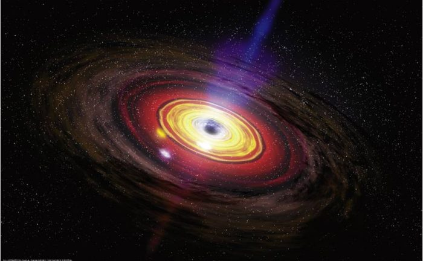
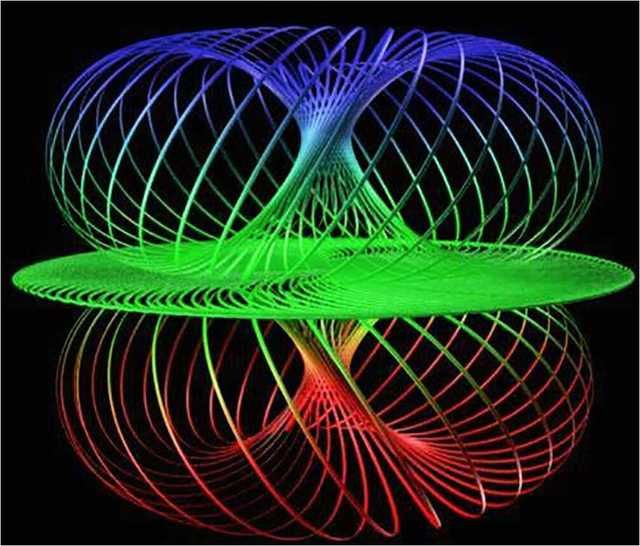
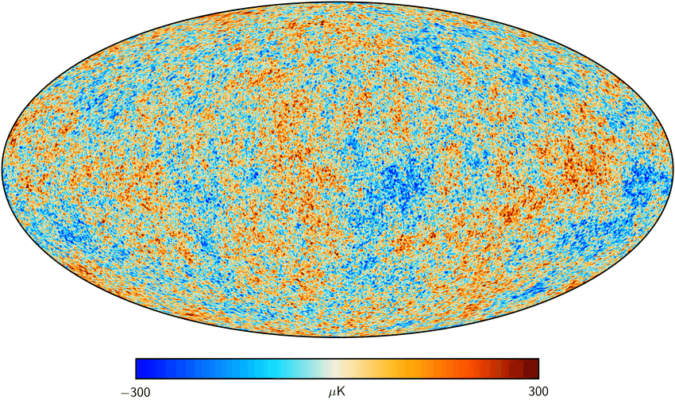
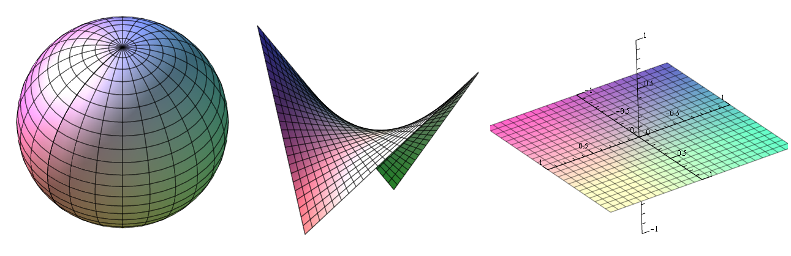

Through my academic training in physics,
I have had the pleasure of working with some
incredible scientists at multiple universities around the world.
Click the headers below to learn more about my research in each area!

Alongside Dr. Rosalba Perna (Stony Brook) and Dr. Davide Lazzati
(Oregon State University), I completed my master's thesis in the area of computational astrophysics
(see the paper
here,
and the thesis
here).

Under the supervision of Dr. Philip Argyres, I worked on a number of problems in quantum
field theory and mathematical physics from spring 2020 through to the end of summer 2021.
This work resulted in my senior thesis in physics which can be seen here
as well as a paper published in April 2022 which can be found here.

My very first research experience in physics came back in the spring of 2018 under the supervision
of Dr. Colin Bischoff. I continued work with Dr. Bischoff until the spring of 2020 in the field
of cosmology.

My first and only research experience in pure math came during the two semesters of my fourth year at UC
under the supervision of Dr. David Herron in the field of metric space geometry.
This research became my senior thesis in mathematics, which can be found here.